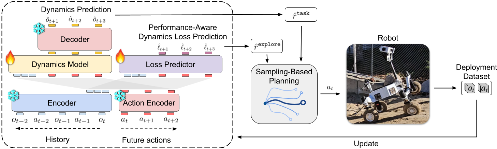

No-Slope
The rover only sees step and ripples obstacles during simulation pretraining. At the deployment site, the rover must learn to climb a slope, an obstacle it has never seen before.
Future planetary missions target steeper and more deformable terrain. However, on loose regolith, steep slopes amplify slip and sinkage. A rover with a passive suspension can dig in and become stuck, as shown below.
The ERNEST rover was designed to overcome extreme terrain challenges (see paper). It is a 75 kg rover with a two-degree-of-freedom Active Gimbal Suspension (AGS). Coordinated control of the AGS allows the rover to redistribute load, enabling crawling-like motions that can pull the rover through soft, steep terrain.
Coordination of the AGS can be trained with reinforcement learning (RL) in simulation. The simulator models some terrain properties (e.g., slip and sinkage), but not all (e.g., soil deformation and rut formation). This sim-to-real gap can result in zero-shot deployment failure. Therefore, the rover needs to be able to adapt at the target site. This adaptation must happen in real-time and be highly efficient, as the rover has limited energy to explore coordination strategies.
We introduce TERRA, an online adaptation framework that efficiently seeks deployment data exposing task-relevant model errors and corrects them. TERRA builds on the SimDist paradigm, which distills a world model from simulation and adapts it to the target domain. TERRA's main features are:

TERRA adapts a simulation-pretrained world model to the target site. To test TERRA, we pretrain in two out-of-distribution conditions, inducing a severe pretrain-to-deployment gap.
The rover only sees step and ripples obstacles during simulation pretraining. At the deployment site, the rover must learn to climb a slope, an obstacle it has never seen before.
The rover is pretrained on slopes and ripples on hard ground, where it does not have to utilize the AGS. At the deployment site, the rover must learn to use the AGS to climb a soft-ground slope, which it has not experienced before.